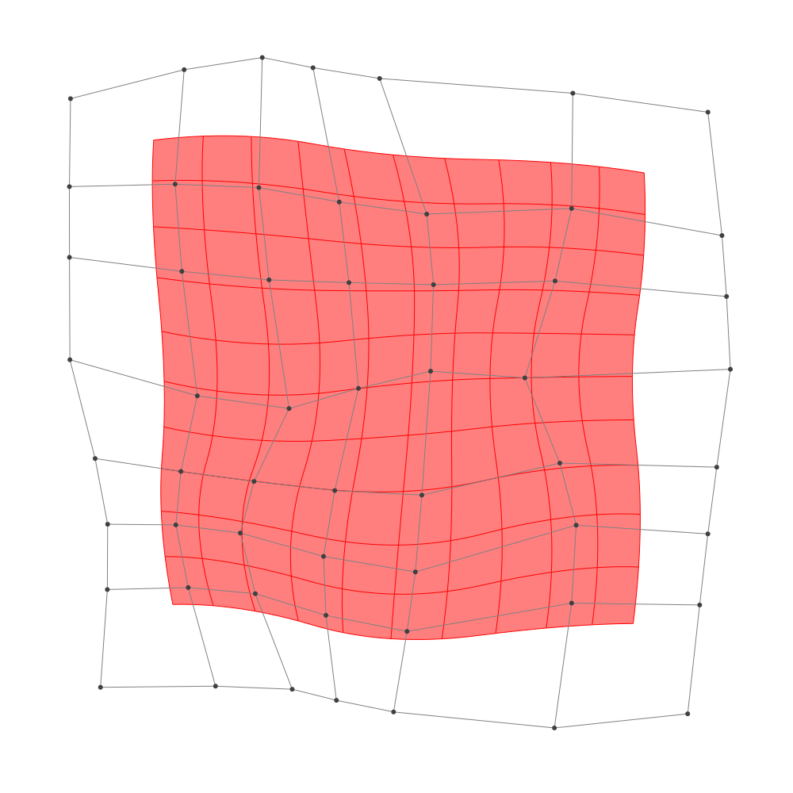
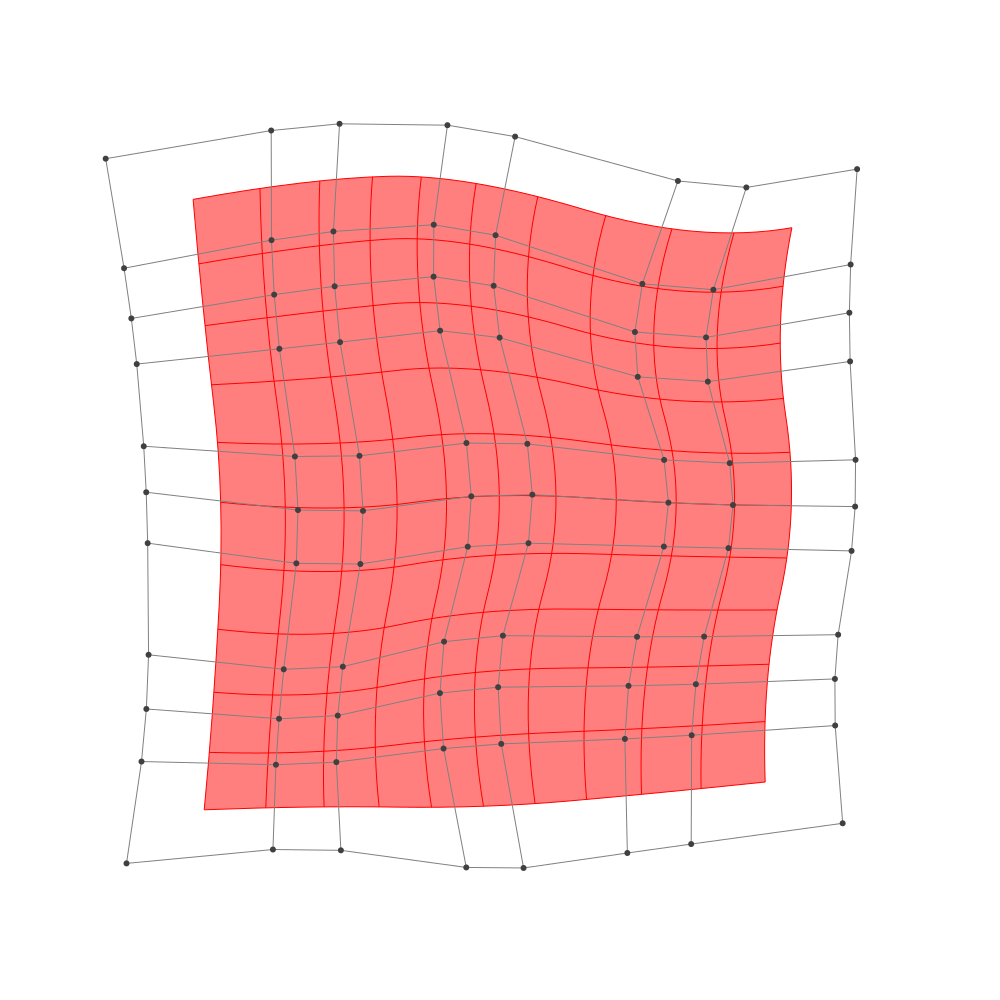

Refinement
julia> p = 2 # degree of polynomial2julia> k = KnotVector(1:8) # knot vectorKnotVector([1.0, 2.0, 3.0, 4.0, 5.0, 6.0, 7.0, 8.0])julia> P = BSplineSpace{p}(k) # B-spline spaceBSplineSpace{2, Float64}(KnotVector([1.0, 2.0, 3.0, 4.0, 5.0, 6.0, 7.0, 8.0]))julia> rand_a = [SVector(rand(), rand()) for i in 1:dim(P), j in 1:dim(P)]5×5 Matrix{StaticArrays.SVector{2, Float64}}: [0.649078, 0.0226332] [0.0470607, 0.838849] … [0.463795, 0.737628] [0.541413, 0.599828] [0.558862, 0.0853738] [0.506186, 0.0158493] [0.819652, 0.123893] [0.168417, 0.146833] [0.0296901, 0.987939] [0.247463, 0.344766] [0.699543, 0.287004] [0.397279, 0.614573] [0.159003, 0.0288019] [0.277645, 0.54279] [0.333459, 0.0119413]julia> a = [SVector(2*i-6.5, 2*j-6.5) for i in 1:dim(P), j in 1:dim(P)] + rand_a # random5×5 Matrix{StaticArrays.SVector{2, Float64}}: [-3.85092, -4.47737] [-4.45294, -1.66115] … [-4.03621, 4.23763] [-1.95859, -3.90017] [-1.94114, -2.41463] [-1.99381, 3.51585] [0.319652, -4.37611] [-0.331583, -2.35317] [-0.47031, 4.48794] [1.74746, -4.15523] [2.19954, -2.213] [1.89728, 4.11457] [3.659, -4.4712] [3.77764, -1.95721] [3.83346, 3.51194]julia> M = BSplineManifold(a,(P,P)) # Define B-spline manifoldBSplineManifold{2, (2, 2), StaticArrays.SVector{2, Float64}, Tuple{BSplineSpace{2, Float64}, BSplineSpace{2, Float64}}}((BSplineSpace{2, Float64}(KnotVector([1.0, 2.0, 3.0, 4.0, 5.0, 6.0, 7.0, 8.0])), BSplineSpace{2, Float64}(KnotVector([1.0, 2.0, 3.0, 4.0, 5.0, 6.0, 7.0, 8.0]))), StaticArrays.SVector{2, Float64}[[-3.850922188202834, -4.4773668139658] [-4.452939278424801, -1.66115112201586] … [-3.7255111662772324, 1.5316480901073941] [-4.036205014085347, 4.237627658652299]; [-1.9585867376096284, -3.9001716343364197] [-1.9411383430599918, -2.4146262448374776] … [-2.4503356328869152, 2.161932137239309] [-1.993814322868178, 3.51584930785486]; … ; [1.7474629379070148, -4.155234086988313] [2.1995427740413396, -2.212995710102098] … [2.31648987556175, 1.5947450108730985] [1.8972786693897632, 4.114573495571487]; [3.659002998685516, -4.471198071125678] [3.777644730790876, -1.9572100514180049] … [3.9939511887503096, 1.9445822788800315] [3.833459119914427, 3.5119412708114526]])
h-refinemnet
Insert additional knots to knot vector.
julia> k₊=(KnotVector(3.3,4.2),KnotVector(3.8,3.2,5.3)) # additional knotvectors(KnotVector([3.3, 4.2]), KnotVector([3.2, 3.8, 5.3]))julia> M_h = refinement(M,k₊=k₊) # refinement of B-spline manifoldBSplineManifold{2, (2, 2), StaticArrays.SVector{2, Float64}, Tuple{BSplineSpace{2, Float64}, BSplineSpace{2, Float64}}}((BSplineSpace{2, Float64}(KnotVector([1.0, 2.0, 3.0, 3.3, 4.0, 4.2, 5.0, 6.0, 7.0, 8.0])), BSplineSpace{2, Float64}(KnotVector([1.0, 2.0, 3.0, 3.2, 3.8, 4.0, 5.0, 5.3, 6.0, 7.0, 8.0]))), StaticArrays.SVector{2, Float64}[[-3.850922188202834, -4.4773668139658] [-4.2121324423360145, -2.7876373987958356] … [-3.7721152434484493, 1.9375450253891295] [-4.036205014085347, 4.237627658652299]; [-2.6209041453172506, -4.102189947206703] [-2.7405228603895058, -2.9314219499926275] … [-2.8684476688566254, 2.215403572226762] [-2.7086510647941875, 3.768471730633964]; … ; [1.7474629379070148, -4.155234086988313] [2.0187108395876097, -2.989891060856584] … [2.253608194635952, 1.9727192835778564] [1.8972786693897632, 4.114573495571487]; [3.659002998685516, -4.471198071125678] [3.730188037948732, -2.962805259301074] … [3.9698773784249273, 2.1796861276697443] [3.833459119914427, 3.5119412708114526]])julia> save_png("2dim_h-refinement.png", M_h) # save image

Note that this shape and the last shape are identical.
p-refinemnet
Increase the polynomial degree of B-spline manifold.
julia> p₊=(1,2) # additional degrees(1, 2)julia> M_p = refinement(M,p₊=p₊) # refinement of B-spline manifoldBSplineManifold{2, (3, 4), StaticArrays.SVector{2, Float64}, Tuple{BSplineSpace{3, Float64}, BSplineSpace{4, Float64}}}((BSplineSpace{3, Float64}(KnotVector([1.0, 2.0, 3.0, 3.0, 4.0, 4.0, 5.0, 5.0, 6.0, 6.0, 7.0, 8.0])), BSplineSpace{4, Float64}(KnotVector([1.0, 2.0, 3.0, 3.0, 3.0, 4.0, 4.0, 4.0, 5.0, 5.0, 5.0, 6.0, 6.0, 6.0, 7.0, 8.0]))), StaticArrays.SVector{2, Float64}[[-3.6602261571273105, -3.7325582903088774] [-3.9096125785073244, -2.435339636204823] … [-3.558688074421423, 2.2568543901852163] [-3.650100401839909, 3.4971723079635564]; [-2.2954249426032383, -3.569539887631124] [-2.3383228690593856, -2.7158780010107346] … [-2.5807018591900692, 2.4517000219516003] [-2.4163758006662714, 3.2413304737534894]; … ; [2.165179652735807, -3.6985122550054266] [2.3634330621338875, -2.6797472629938635] … [2.5020439236058505, 2.2433221145168942] [2.3139982486311994, 3.4238638991355077]; [3.383966675916648, -3.813863303960094] [3.471074050638406, -2.604515097674711] … [3.6634713219542414, 2.317802044393688] [3.5616653594249583, 3.1808539980899795]])julia> save_png("2dim_p-refinement.png", M_p) # save image

Note that this shape and the last shape are identical.